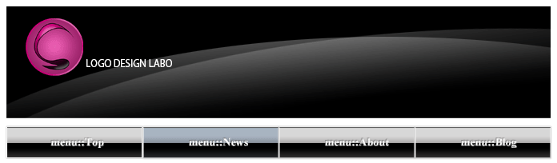

第2章 設定と基本操作
第1節 フォトショップとは
本章ではフォトショップの起動から新規ファイルを作成しながら、
ファイル作成時の基本的な設定と画面の各部名称および操作方法について学習します。
第1項 フォトショップの特徴
本章で使用する素材ファイルをダウンロードしましょう。
第2章素材ファイル
・Windowsをご使用の方:
ファイル名をクリックすると自動的にダウンロードが開始されます。ダウンロード先をデスクトップに指定してください。
ダウンロードしたファイルをダブルクリックして解凍しましょう。解凍したフォルダを通学の方は学習用サーバの「ご自分のフォルダ」へ、通信講座の方はお好きなフォルダに保存し、デスクトップから削除しておきましょう。
・Macをご使用の方:
ファイル名をクリックするとデスクトップに解凍された状態でダウンロードされます。ダウロードしたファイルを通学の方は学習用サーバの「ご自分のフォルダ」へ、通信講座の方はお好きなフォルダに保存し、デスクトップから削除しておきましょう。
Photoshop（フォトショップ）とは
Photoshop（フォトショップ）は、アメリカのAdobe Systems（アドビ システムズ）社が開発したビットマップ画像処理ソフトです。
画像処理ソフトは世界中にさまざまな種類（Fireworks・GIMPなど）がありますが、
Photoshopはプロフェッショナルユーザーだけでなく、
アマチュアのイラストレーターや写真家などの
一般ユーザーにも広く浸透し、画像加工を行う上での事実上の標準ソフトになっています。
主に写真のレタッチソフトとして知られていますが、その高性能な機能を利用することにより、
画像加工やイラストなどの印刷用途に留まらず、WEB画像作成などにも幅広く利用されています。
Photoshopで行う画像処理は以下のような場面で使用されています。
- 写真の補正・修正・合成
- ロゴ・イラストの作成
- WEBサイト用素材（背景やボタンなど）の作成
- スキャナ・デジタルカメラに接続してデータの取り込み・操作
さまざまな画像処理用途でPhotoshopが使用されていますが、
全てをこのソフトひとつで行うのではなく、
IllustratorやInDesignといった他のAdobe製ソフトとシームレスな連携を行うことにより、
より多彩で効率的な画像作成を行うことができます。
フォトショップでできる具体例
下は写真の修整の具体例です。
スキャナ読み取り時に出たゴミなどを取り除き、写真の色合いを修正することで色鮮やかな写真に生まれ変わります。

また複数の写真を合せて合成写真を作成できます。

さらに文字や図形などを加工することでWEBサイト用のタイトルやボタンをつくることもできます。

他にもさまざまな画像加工や作成が可能です。
この講座では、Photoshopのよく使われる機能を中心に
写真補正などさまざまなテクニックを学習します。